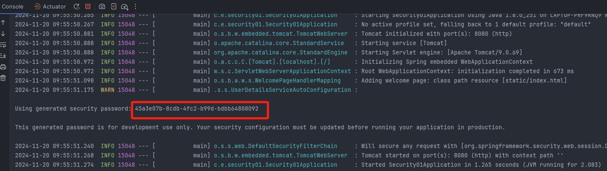
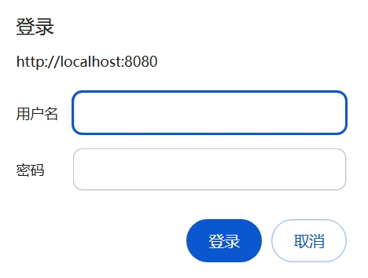

SpringSecurity5（1-快速入门）
依赖
1 | <dependency> |
登录认证
1 |
|
注意：导入依赖之后，访问 localhost: 8080/test 请求地址会自动跳转到 localhost: 8080/test 中，出现一个表单，需要登录后才能访问
用户名默认为 user，密码在控制台出现

将表单请求转换为弹出框请求
WebSecurityConfigurerAdapter
1 | /** |
使用案例
- 创建配置类继承 WebSecurityConfigurerAdapter 类，实现 http 的 configure 方法
1 |
|
- 访问地址：localhost: 8080/test，此时发现表单请求转换为弹出框请求

@EnableWebSecurity
在非 Springboot 的 Spring Web MVC 应用中，该注解@EnableWebSecurity 需要开发人员自己引入以启用 Web 安全。
在基于 Springboot 的 Spring Web MVC 应用中，开发人员没有必要再次引用该注解，Springboot 的自动配置机制 WebSecurityEnablerConfiguration 已经引入了该注解
1 | // 省略 imports 行 |
路径匹配器
MvcRequestMatcher
匹配规则
- /a：仅匹配路径/a
- /a/*：操作符* 会替换一个路径名。在这种情况下，它将匹配/a/b 或/a/c，而不是/a/b/c
- /a/**：操作符** 会替换多个路径名。在这种情况下，/a 以及/a/b 和/a/b/c 都是这个表达式的匹配项
- /a/{param}：这个表达式适用于具有给定路径参数的路径/a
- /a/{param: regex}：只有当参数的值与给定正则表达式匹配时，此表达式才应用于具有给定路径参数的路径/a
使用案例
- 单个请求无请求方法匹配
1 | http.authorizeRequests() |
如果使用角色为“USER”的用户来访问“/hello_admin”端点，那么会出现禁止访问的情况，因为“/hello_admin”端点只有角色为“ADMIN”的用户才能访问
注意：没有被 MVC 匹配器所匹配的端点，其访问不受任何的限制，效果相当于如下所示的配置
1 | http.authorizeRequests() |
- 单个请求有请求方法匹配
如果一个 Controller 中存在两个路径完全一样的 HTTP 端点，可以把 HTTP 方法作为一个访问的维度进行控制
1 | http.authorizeRequests() |
- 多个路径匹配
1 | http.authorizeRequests() |
- 带有路径变量匹配
1 |
|
1 | http.authorizeRequests() |
此时调用端点，假设 code = 1234a，不符合全部都是数字，报 401；然后再次调用端点，code = 12345，发现调用通过
AntPathRequestMatcher
Ant 匹配器的表现形式和使用方法与前面介绍的 MVC 匹配器非常相似
使用方法：
- antMatchers(String patterns)
- antMatchers(HttpMethod method)
- antMatchers(HttpMethod method, String patterns)
mvc 与 ant 匹配器的区别
- antMatchers(“/secured”)仅仅匹配 /secured
- mvcMatchers(“/secured”)匹配 /secured 之余还匹配 /secured/，/secured.html，/secured.xyz
因此 mvcMatcher 更加通用且容错性更高
RegexRequestMatcher
使用方法：
- regexMatchers(HttpMethod method, String regex)
- regexMatchers(String regex)
使用这一匹配器的主要优势在于它能够基于复杂的正则表达式对请求地址进行匹配，这是 MVC 匹配器和 Ant 匹配器无法实现的
1 | http.authorizeRequests() |
本博客所有文章除特别声明外，均采用 CC BY-NC-SA 4.0 许可协议。转载请注明来源 爱编程的小生！
相关推荐

2025-02-17
SpringSecurity5（10-动态权限管理）
Spring Security动态权限管理通过实时更新权限配置，支持按需调整用户权限，实现灵活的访问控制。结合注解、表达式等方式，能够动态加载和检查用户权限，无需重启系统，确保应用在复杂业务场景下的安全性与可扩展性，提升用户体验与管理效率。
2025-02-18
SpringSecurity5（11-跨域配置）
Spring Security跨域配置通过在WebSecurityConfigurerAdapter中自定义CorsConfiguration实现。可以配置允许的请求来源、请求方法、请求头等，以确保前端与后端之间的安全通信。结合@CrossOrigin注解或CorsFilter进行灵活配置，保障不同源的资源访问权限控制和数据安全。
2025-02-19
SpringSecurity5（12-Csrf防护）
Spring Security的CSRF防护机制通过生成唯一的令牌来防止跨站请求伪造攻击。每次用户提交表单时，系统会自动验证该令牌是否与服务器端一致，若不匹配则拒绝请求。该功能默认启用，有助于保障应用的安全性，避免恶意请求劫持用户会话。
2025-02-26
SpringSecurity5（13-核心组件和认证流程）
Spring Security 5提供了强大的认证与授权功能，核心组件包括AuthenticationManager、AuthenticationProvider、SecurityContext、UserDetailsService等。认证流程通常从用户请求开始，经过认证过滤器（如UsernamePasswordAuthenticationFilter）验证身份，成功后生成SecurityContext并存储用户信息，确保后续访问的安全性和权限控制。
2025-02-27
SpringSecurity5（14-Gateway整合）
Spring Security整合Gateway可实现API网关级别的身份认证与权限控制。通过Gateway的全局过滤器拦截请求，结合OAuth2或JWT进行身份验证，并基于Spring Security的授权规则进行访问控制，从而确保微服务架构下的安全性与高效性。
2024-12-30
SpringSecurity5（2-自定义用户信息）
Spring Security允许自定义用户信息以满足特定的认证需求。通过实现UserDetailsService接口，可以从数据库或其他存储源加载用户信息。自定义UserDetails类，提供用户名、密码、权限等信息，并结合Spring Security的AuthenticationManager进行身份验证。这样可以灵活地实现复杂的用户认证逻辑，适应不同的业务需求。
评论
SpringSecurity5